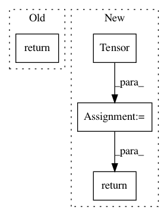

3332773273242f370778ef157208442ec3167754,tensorflow_datasets/audio/nsynth.py,Nsynth,_info,#Nsynth#,97
Before Change
]
def _info(self):
return tfds.core.DatasetInfo(
builder=self,
description=_DESCRIPTION,
features=tfds.features.FeaturesDict({
"id":
tf.string,
"audio":
tfds.features.Tensor(shape=(_SAMPLE_LENGTH,), dtype=tf.float32),
"pitch":
tfds.features.ClassLabel(num_classes=128),
"velocity":
tfds.features.ClassLabel(num_classes=128),
"instrument": {
// We read the list of labels in _split_generators.
"label": tfds.features.ClassLabel(num_classes=1006),
"family": tfds.features.ClassLabel(names=_INSTRUMENT_FAMILIES),
"source": tfds.features.ClassLabel(names=_INSTRUMENT_SOURCES),
},
"qualities": {quality: tf.bool for quality in _QUALITIES},
}),
urls=["https://g.co/magenta/nsynth-dataset"],
citation=_CITATION,
)
def _split_generators(self, dl_manager):
Returns splits.
dl_urls = {
After Change
]
def _info(self):
features = {
"id":
tf.string,
"audio":
tfds.features.Tensor(
shape=(_AUDIO_RATE * _NUM_SECS,), dtype=tf.float32),
"pitch":
tfds.features.ClassLabel(num_classes=128),
"velocity":
tfds.features.ClassLabel(num_classes=128),
"instrument": {
// We read the list of labels in _split_generators.
"label": tfds.features.ClassLabel(num_classes=1006),
"family": tfds.features.ClassLabel(names=_INSTRUMENT_FAMILIES),
"source": tfds.features.ClassLabel(names=_INSTRUMENT_SOURCES),
},
"qualities": {quality: tf.bool for quality in _QUALITIES},
}
if self.builder_config.estimate_f0_and_loudness:
f0_and_ld_shape = (_F0_AND_LOUDNESS_RATE * _NUM_SECS + 1,)
features["f0"] = {
"hz":
tfds.features.Tensor(shape=f0_and_ld_shape, dtype=tf.float32),
"midi":
tfds.features.Tensor(shape=f0_and_ld_shape, dtype=tf.float32),
"confidence":
tfds.features.Tensor(shape=f0_and_ld_shape, dtype=tf.float32)
}
features["loudness"] = {
"db":
tfds.features.Tensor(shape=f0_and_ld_shape, dtype=tf.float32)
}
return tfds.core.DatasetInfo(
builder=self,
description=_DESCRIPTION,
features=tfds.features.FeaturesDict(features),
urls=["https://g.co/magenta/nsynth-dataset"],
citation=_CITATION,
metadata=tfds.core.BeamMetadataDict(),
)
def _split_generators(self, dl_manager):
Returns splits.
In pattern: SUPERPATTERN
Frequency: 4
Non-data size: 4
Instances
Project Name: tensorflow/datasets
Commit Name: 3332773273242f370778ef157208442ec3167754
Time: 2019-10-18
Author: adarob@google.com
File Name: tensorflow_datasets/audio/nsynth.py
Class Name: Nsynth
Method Name: _info
Project Name: richzhang/PerceptualSimilarity
Commit Name: 7b34113cc3b5529a127bd02667de9de0b5b75df9
Time: 2019-07-26
Author: rich.zhang@eecs.berkeley.edu
File Name: models/networks_basic.py
Class Name: PNet
Method Name: forward
Project Name: naoto0804/pytorch-inpainting-with-partial-conv
Commit Name: c9159b91e20a36766aafe4d6fcd8c8e8041f1b66
Time: 2018-06-04
Author: inoue@hal.t.u-tokyo.ac.jp
File Name: util/image.py
Class Name:
Method Name: unnormalize
Project Name: geomstats/geomstats
Commit Name: f73bc9895e5a454eec2311a2e624227e5fb2848f
Time: 2019-06-13
Author: ninamio78@gmail.com
File Name: geomstats/backend/pytorch.py
Class Name:
Method Name: array